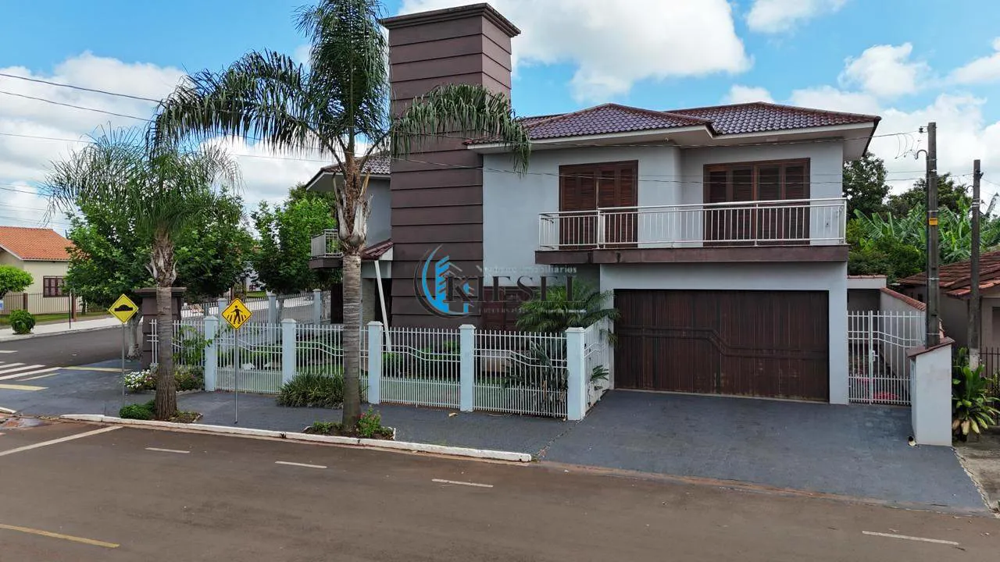
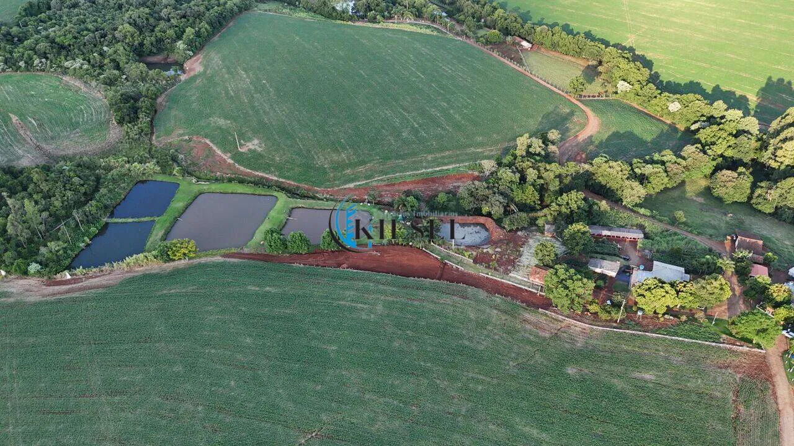
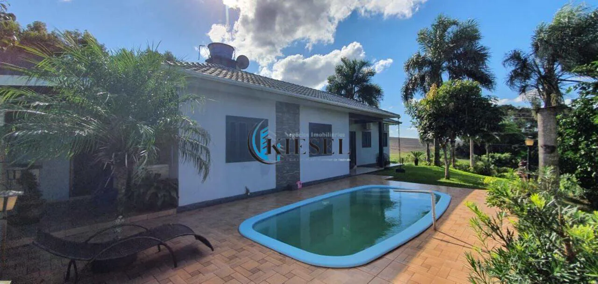
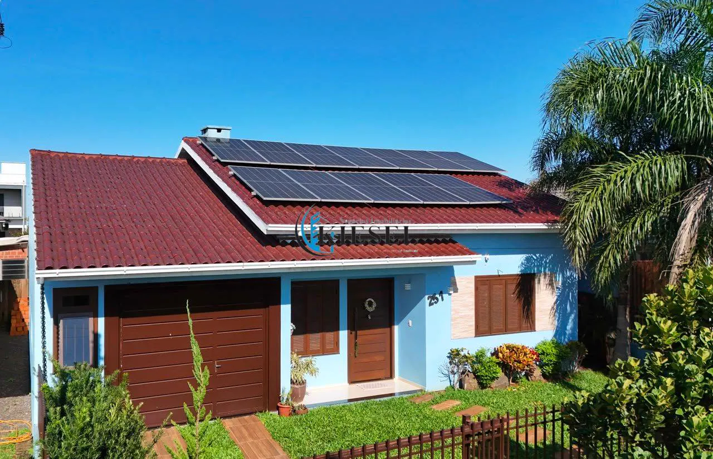
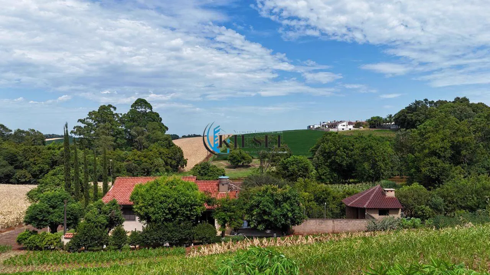

Um lugar em São Martinho para chamar de seu.
Por trás de cada negócio, uma história de respeito e confiança. Casas, terrenos, chácaras e salas comerciais em São Martinho e região.
AKieseltem41imóveisàvendaeparaalugaremSãoMartinhoeregião,comumcorretorqueconhececadaruadacidadeeohistóricodecadacasa.
Os imóveis que definem a cidade.
Casa com 2 quartos, 303 m²
Novo · São Martinho/RSCasa com 2 quartos, 105 m²
Jardim · São Martinho/RSChácara com 3 quartos, 3 hectares
Interior · Sede Nova/RSCasa com 3 quartos, 220 m²
Jardim · São Martinho/RS
CA0047Casa com 3 quartos, 132 m²
Jardim · São Martinho/RSChácara com 3 quartos, 4.500 m²
Interior · São Martinho/RSAtualizados recentemente.

 TE0028Terreno
TE0028TerrenoTerreno, 987 m²
R$ 340.000
 CA0047Casa
CA0047CasaCasa com 3 quartos, 132 m²
R$ 775.000
 CA0045Casa
CA0045CasaCasa com 3 quartos, 110 m²
R$ 380.000
 SA0003Sala comercial · aluguel
SA0003Sala comercial · aluguelSala, 80 m²
R$ 1.300/mês
 CA0046Casa
CA0046CasaCasa com 2 quartos, 100 m²
R$ 580.000
 SA0002Sala comercial · aluguel
SA0002Sala comercial · aluguelSala, 1 m²
R$ 1.900/mêsCada bairro, um jeito de morar.
Do Centro às chácaras do interior, a carteira cobre São Martinho inteira e o município vizinho de Sede Nova. Passe o mouse para ver.
Sem surpresa, do primeiro contato à escritura.
Conversa
Você conta o que procura ou o que quer vender. A Kiesel responde pelo WhatsApp, sem formulário intermediário nem central de atendimento.
Visita
Visita acompanhada pelo corretor, que conhece o imóvel, a vizinhança e o histórico de cada quadra. Você vê o que a foto não mostra.
Proposta, financiamento e escritura
Negociação direta com o proprietário, orientação para financiar e documentação conferida até a assinatura. Simule aqui no site antes de visitar.
A imobiliária da cidade, registrada no CRECI sob o nº 45.125/RS.

A Kiesel Negócios Imobiliários atende São Martinho, o interior e os municípios vizinhos com casas, terrenos, chácaras, áreas rurais e salas comerciais. O escritório fica na Avenida Getúlio Vargas, no Centro.
Toda a carteira está neste site com preço, fotos e descrição. Não há imóvel escondido: o que você vê aqui é o que está disponível.